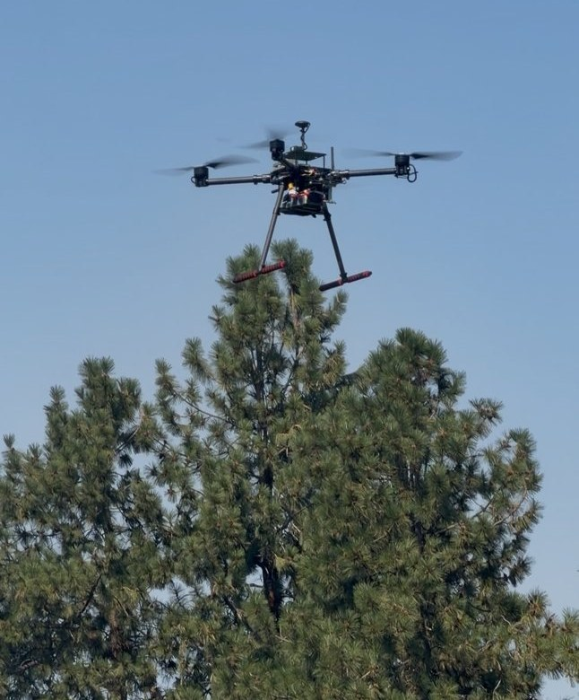

Agricultural Survey Drone
Designed and built a quadcopter capable of 22-minute survey flights and a 3.5 kg payload for about $2,200, giving small farmers a survey tool they otherwise couldn't afford.
Why
Commercial agricultural drones are often out of reach for small farms. A medium-size chassis can meet the flight time and payload needed for a range of specialized survey tasks, giving smaller farmers access to critical information about their land.
How
I paired a 650 mm carbon fiber chassis with 340 KV motors, 15 × 5.5 in propellers, and an 8000 mAh battery, producing 9 kg of thrust at 6,000 RPM for the 2.9 kg airframe. Designing to a 1.5 factor of safety for loaded missions allowed a 3.5 kg payload. A custom ESC and power distribution board configuration handles current spikes up to 200 A, giving ample headroom for survey missions.
Result
The powertrain delivered stable 22-minute unloaded survey runs with enough thrust to lift 3.5 kg. Autonomous survey missions achieved roughly 3.8 m horizontal accuracy, sufficient for surveys at 100 ft altitude, at a total cost about $4,000 below comparable drones.
